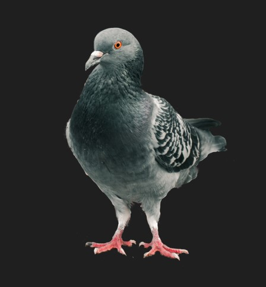

This resume is waiting for updates
Yuliya CHERESHKEVYCH

Web Developer
About me
Fresh perspective web developer.
I always try to look for most quick and relevant ways to solve a problem(information)
As a self learner I had some useful life experience. (that led to)
I learnt to gathering information effectively and quick when needed.
Portfolio
Link
Skills
- Adobe Photoshop
- Adobe Illustrator
- HTML
- CSS
Languages
- Ukrainian
- English ((Pre)Intermediate)
- Russian
Work experience
Education
- Online course
- 2008 Kharkov
National Airospace University Lyceum
- 2008-2009 Kharkov
(Uncompleted) National Airospace University